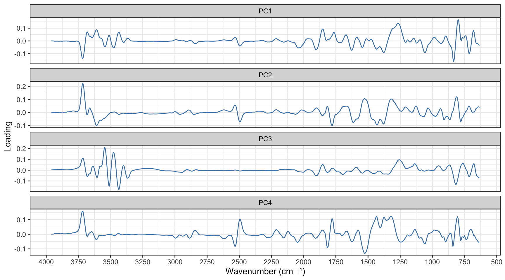
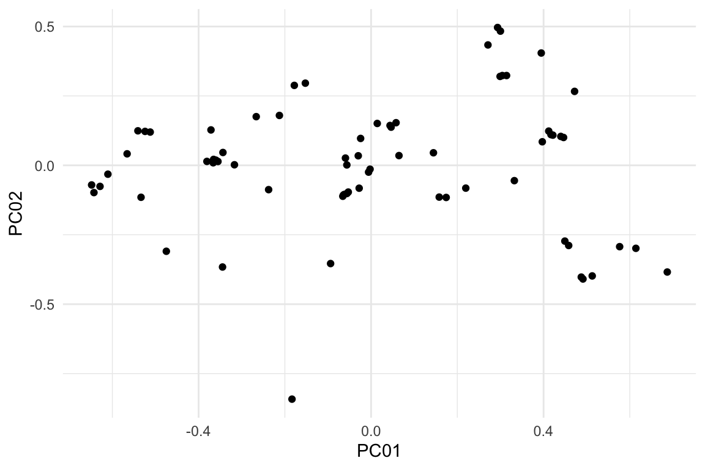
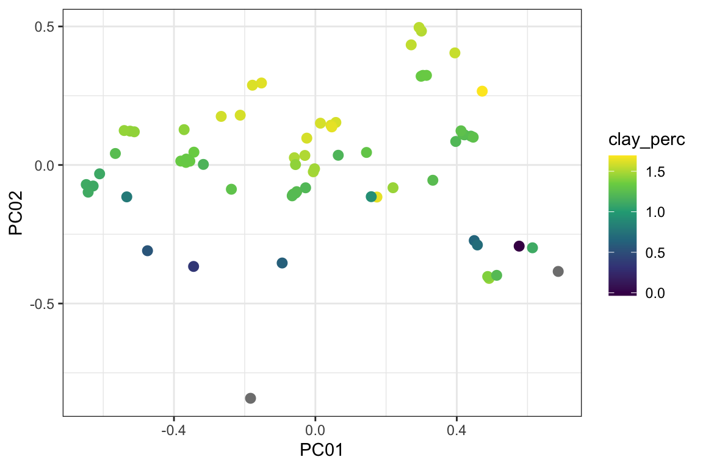
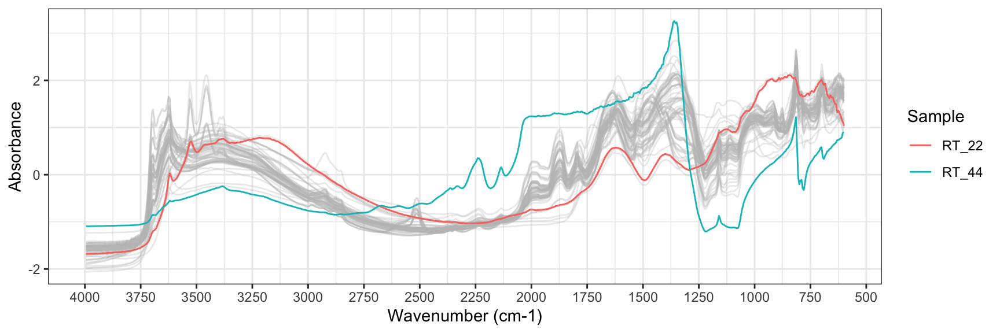
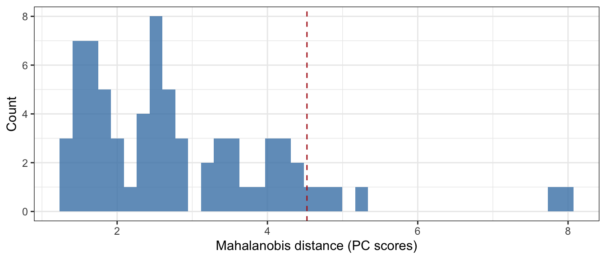
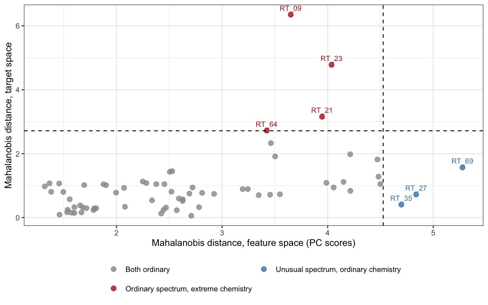

library(here)
library(tidyverse)
library(tidymodels)
library(skimr)
source(here("R", "prepare_data.R"))
source(here("R", "steps.R"))
source(here("R", "plots.R"))
theme_set(theme_bw())
tidymodels_prefer()Outlier detection
Use PCA on the preprocessed spectra to find samples a model shouldn’t trust.
References: - recipes R package (Tidymodels)
SPECTRA_DIR = here("data/RT_spectra")
SOIL_PROP_FILE = here("data/RT_wetchem_soildata.csv")TARGET <- "clay_perc"
# --- Preprocessing ----------------------------------------------------------
RESAMPLE_BY <- 5L
RESAMPLING_GRID <- seq(3995, 600, by = -5)
SG_W <- 15L
SG_P <- 3L
SG_M <- 1LGetting data
data <- prepare_rt(SPECTRA_DIR, SOIL_PROP_FILE)Pre-processing recipe
spc_cols <- names(data)[startsWith(names(data), "wn_")]
meta_cols <- setdiff(names(data), c(TARGET, spc_cols))rec <- recipe(data) |>
update_role(all_of(TARGET), new_role = "outcome") |>
update_role(all_of(spc_cols), new_role = "predictor") |>
update_role(all_of(meta_cols), new_role = "metadata") |>
step_log(all_outcomes(), base = 10) |>
step_resample(grid = RESAMPLING_GRID) |>
step_snv() |>
step_sg(w = SG_W, p = SG_P, m = SG_M)rec_prep <- prep(rec, training = data, verbose = TRUE)oper 1 step log [training]
oper 2 step resample [training]
oper 3 step snv [training]
oper 4 step sg [training]
The retained training set is ~ 0.44 Mb in memory.rec_prep |> summary()# A tibble: 674 × 4
variable type role source
<chr> <list> <chr> <chr>
1 smp_id <chr [3]> metadata original
2 source <chr [3]> metadata original
3 clay_perc <chr [2]> outcome original
4 pH_H20 <chr [2]> metadata original
5 carbon_tot_perc <chr [2]> metadata original
6 carbon_org_perc <chr [2]> metadata original
7 potassium_cmolkg <chr [2]> metadata original
8 phosporus_mgkg <chr [2]> metadata original
9 wn_3960 <chr [2]> predictor derived
10 wn_3955 <chr [2]> predictor derived
# ℹ 664 more rowsPrincipal Component Analysis
rec_pca <- rec_prep |>
step_pca(
all_predictors(),
num_comp = 10,
options = list(
center = TRUE,
scale. = FALSE
),
prefix = "PC"
)rec_pca |> summary()# A tibble: 674 × 4
variable type role source
<chr> <list> <chr> <chr>
1 smp_id <chr [3]> metadata original
2 source <chr [3]> metadata original
3 clay_perc <chr [2]> outcome original
4 pH_H20 <chr [2]> metadata original
5 carbon_tot_perc <chr [2]> metadata original
6 carbon_org_perc <chr [2]> metadata original
7 potassium_cmolkg <chr [2]> metadata original
8 phosporus_mgkg <chr [2]> metadata original
9 wn_3960 <chr [2]> predictor derived
10 wn_3955 <chr [2]> predictor derived
# ℹ 664 more rowsrec_pca_prep <- rec_pca |> prep()Getting PCA loadings
loadings <- tidy(rec_pca_prep, number = 5, type = "coef")loadings <- loadings |>
mutate(wn = as.integer(str_remove(terms, "wn_"))) |>
filter(component %in% paste0("PC", 1:4))ggplot(loadings, aes(wn, value)) +
geom_line(alpha = 1, colour = "steelblue") +
facet_wrap(~ component, ncol = 1, scales = "free_y") +
scale_x_reverse(
breaks = seq(500, 4000, by = 250),
minor_breaks = seq(500, 4000, by = 125)) +
labs(
x = "Wavenumber (cm⁻¹)",
y = "Loading")
Getting PCA scores
scores <- bake(
rec_pca_prep,
new_data = NULL
)scores |> glimpse()Rows: 70
Columns: 18
$ smp_id <chr> "RT_01", "RT_02", "RT_03", "RT_04", "RT_05", "RT_06",…
$ source <chr> "KSSL", "KSSL", "KSSL", "KSSL", "KSSL", "KSSL", "KSSL…
$ clay_perc <dbl> 0.79809724, 0.64781509, 1.62531152, 1.23311673, 1.236…
$ pH_H20 <dbl> 4.8525, 4.5850, 4.2300, 6.5300, 6.4700, 6.9200, 6.590…
$ carbon_tot_perc <dbl> 0.61170, 3.48602, 0.25716, 1.97755, 2.14765, 2.04600,…
$ carbon_org_perc <dbl> 0.61170, 3.48602, 0.25716, 1.97755, 2.13584, 2.02458,…
$ potassium_cmolkg <dbl> 0.26906, 0.23349, 0.29109, 0.49925, 0.59977, 0.64127,…
$ phosporus_mgkg <dbl> 5.59999, 19.28365, NA, NA, NA, NA, NA, 0.41410, 3.255…
$ PC01 <dbl> -0.53350402, 0.44938998, -0.15245125, -0.06433706, -0…
$ PC02 <dbl> -0.115064485, -0.272830239, 0.295894880, -0.107425759…
$ PC03 <dbl> -0.1980030932, 0.0045132263, 0.0711042342, -0.1842744…
$ PC04 <dbl> -0.19217750, 0.17667577, 0.33725318, 0.01946727, 0.03…
$ PC05 <dbl> 0.027544007, 0.086179889, -0.358854723, 0.097110095, …
$ PC06 <dbl> -0.214696319, 0.069655729, -0.047520495, 0.015120929,…
$ PC07 <dbl> 0.0935389010, 0.0980032086, 0.0868385490, -0.01090680…
$ PC08 <dbl> -0.067557339, -0.107265147, -0.064981214, 0.066044962…
$ PC09 <dbl> 0.017459370, -0.004556574, 0.085195334, -0.014956385,…
$ PC10 <dbl> -0.0422291439, -0.1523821419, -0.0218271534, -0.00524…names(scores) [1] "smp_id" "source" "clay_perc" "pH_H20"
[5] "carbon_tot_perc" "carbon_org_perc" "potassium_cmolkg" "phosporus_mgkg"
[9] "PC01" "PC02" "PC03" "PC04"
[13] "PC05" "PC06" "PC07" "PC08"
[17] "PC09" "PC10" Outlier detection
Visual check in PC score space
scores |>
ggplot(aes(PC01, PC02)) +
geom_point()
scores |>
mutate(distance = sqrt(PC01^2 + PC02^2)) |>
slice_max(distance, n = 10) |>
select(smp_id, PC01, PC02, distance, clay_perc, carbon_org_perc)# A tibble: 10 × 6
smp_id PC01 PC02 distance clay_perc carbon_org_perc
<chr> <dbl> <dbl> <dbl> <dbl> <dbl>
1 RT_44 -0.183 -0.842 0.862 -Inf NA
2 RT_42 0.687 -0.384 0.787 NA 49.1
3 RT_09 0.614 -0.299 0.683 1.11 16.2
4 RT_25 -0.648 -0.0706 0.652 1.11 1.10
5 RT_37 -0.643 -0.0981 0.650 1.12 1.10
6 RT_35 0.513 -0.398 0.649 1.22 2.78
7 RT_23 0.576 -0.293 0.647 -0.0342 10.9
8 RT_22 0.491 -0.409 0.640 1.44 3.94
9 RT_36 -0.629 -0.0758 0.633 1.11 1.07
10 RT_34 0.487 -0.402 0.632 1.40 3.64ggplot(scores, aes(PC01, PC02, colour = clay_perc)) +
geom_point(size = 2.5) +
scale_colour_viridis_c()
scores |>
slice_min(PC02, n = 5) |>
select(smp_id, PC01, PC02, clay_perc, carbon_org_perc)# A tibble: 5 × 5
smp_id PC01 PC02 clay_perc carbon_org_perc
<chr> <dbl> <dbl> <dbl> <dbl>
1 RT_44 -0.183 -0.842 -Inf NA
2 RT_22 0.491 -0.409 1.44 3.94
3 RT_34 0.487 -0.402 1.40 3.64
4 RT_35 0.513 -0.398 1.22 2.78
5 RT_42 0.687 -0.384 NA 49.1 Eyeballing flagged spectra
rec <- recipe(data) |>
update_role(all_of(TARGET), new_role = "outcome") |>
update_role(all_of(spc_cols), new_role = "predictor") |>
update_role(all_of(meta_cols), new_role = "metadata") |>
step_log(all_outcomes(), base = 10) |>
step_resample(grid = RESAMPLING_GRID) |>
step_snv()rec_prep <- prep(rec, training = data, verbose = TRUE)oper 1 step log [training]
oper 2 step resample [training]
oper 3 step snv [training]
The retained training set is ~ 0.45 Mb in memory.data_processed <- bake(
rec_prep,
new_data = NULL
)data_processed |> plot_spectra(highlight = c("RT_44", "RT_22"))
Mahalanobis distance in feature space
The 2D checks above use only PC01 and PC02, and treat both axes as if they had the same spread. Mahalanobis distance from the centroid uses all retained components and scales each one by its own variance. PCA scores are orthogonal, so their covariance matrix is close to diagonal, and base R’s mahalanobis() is enough. It returns the squared distance, so we take the square root.
Squared Mahalanobis distance approximately follows a chi-squared distribution with degrees of freedom equal to the number of variables. We use this to set the cutoff, instead of a fixed value such as 3. A fixed value of 3 is close to sqrt(qchisq(0.975, df = 3)), so it suits about 3 components, not 10.
ALPHA <- 0.975
pc_cols <- names(scores)[startsWith(names(scores), "PC")]
X <- scores |> select(all_of(pc_cols)) |> as.matrix()
feat_cutoff <- sqrt(qchisq(ALPHA, df = length(pc_cols)))
feat_cutoff[1] 4.525834scores <- scores |>
mutate(dist_feat = sqrt(mahalanobis(X, colMeans(X), cov(X))))ggplot(scores, aes(dist_feat)) +
geom_histogram(bins = 40, fill = "steelblue", alpha = 0.8) +
geom_vline(xintercept = feat_cutoff, linetype = "dashed", colour = "firebrick") +
labs(x = "Mahalanobis distance (PC scores)", y = "Count")
scores |>
filter(dist_feat > feat_cutoff) |>
arrange(desc(dist_feat)) |>
select(smp_id, dist_feat, clay_perc, carbon_org_perc)# A tibble: 5 × 4
smp_id dist_feat clay_perc carbon_org_perc
<chr> <dbl> <dbl> <dbl>
1 RT_42 7.99 NA 49.1
2 RT_44 7.87 -Inf NA
3 RT_69 5.28 1.69 2.56
4 RT_27 4.84 1.43 0.172
5 RT_35 4.70 1.22 2.78 Distance in target space
We apply the same method to the soil properties. clay_perc is already log10-transformed by the recipe, which is the space the model uses. Samples with a missing value are dropped. With 2 properties, the cutoff uses df = 2.
targets <- scores |>
select(smp_id, clay_perc, carbon_org_perc) |>
drop_na()
Y <- targets |> select(clay_perc, carbon_org_perc) |> as.matrix()
target_cutoff <- sqrt(qchisq(ALPHA, df = ncol(Y)))
target_cutoff[1] 2.716203targets <- targets |>
mutate(dist_target = sqrt(mahalanobis(Y, colMeans(Y), cov(Y))))Feature-space vs. target-space distance
Plotting one distance against the other splits the samples into four regions:
- Both ordinary: nothing to discuss.
- Unusual spectrum, ordinary chemistry: the spectrum is unusual but the reported properties look normal. This can be a matrix effect (particle size, moisture, packing) or an instrument artefact.
- Unusual spectrum and chemistry: the spectrum and the chemistry agree that the sample is unusual. This is more likely a genuine rare soil than a measurement problem.
- Ordinary spectrum, extreme chemistry: the spectrum looks like the others, but a reported property is extreme. Be most suspicious of these. A genuinely unusual composition usually leaves a trace in the spectrum, so a wet-chemistry or transcription error is more likely.
dists <- scores |>
select(smp_id, dist_feat) |>
inner_join(targets |> select(smp_id, dist_target), by = "smp_id") |>
mutate(region = case_when(
dist_feat <= feat_cutoff & dist_target <= target_cutoff ~ "Both ordinary",
dist_feat > feat_cutoff & dist_target <= target_cutoff ~ "Unusual spectrum, ordinary chemistry",
dist_feat > feat_cutoff & dist_target > target_cutoff ~ "Unusual spectrum and chemistry",
TRUE ~ "Ordinary spectrum, extreme chemistry"
))ggplot(dists, aes(dist_feat, dist_target, colour = region)) +
geom_point(size = 2.5, alpha = 0.8) +
geom_vline(xintercept = feat_cutoff, linetype = "dashed") +
geom_hline(yintercept = target_cutoff, linetype = "dashed") +
geom_text(
data = filter(dists, region != "Both ordinary"),
aes(label = smp_id), vjust = -0.8, size = 3, show.legend = FALSE) +
scale_colour_manual(values = c(
"Both ordinary" = "grey60",
"Unusual spectrum, ordinary chemistry" = "steelblue",
"Unusual spectrum and chemistry" = "darkgreen",
"Ordinary spectrum, extreme chemistry" = "firebrick")) +
labs(
x = "Mahalanobis distance, feature space (PC scores)",
y = "Mahalanobis distance, target space",
colour = NULL) +
theme(legend.position = "bottom") +
guides(colour = guide_legend(ncol = 2))
dists |>
filter(region != "Both ordinary") |>
arrange(region, desc(dist_feat))# A tibble: 7 × 4
smp_id dist_feat dist_target region
<chr> <dbl> <dbl> <chr>
1 RT_23 4.04 4.78 Ordinary spectrum, extreme chemistry
2 RT_21 3.95 3.16 Ordinary spectrum, extreme chemistry
3 RT_09 3.65 6.35 Ordinary spectrum, extreme chemistry
4 RT_64 3.42 2.72 Ordinary spectrum, extreme chemistry
5 RT_69 5.28 1.57 Unusual spectrum, ordinary chemistry
6 RT_27 4.84 0.723 Unusual spectrum, ordinary chemistry
7 RT_35 4.70 0.405 Unusual spectrum, ordinary chemistry